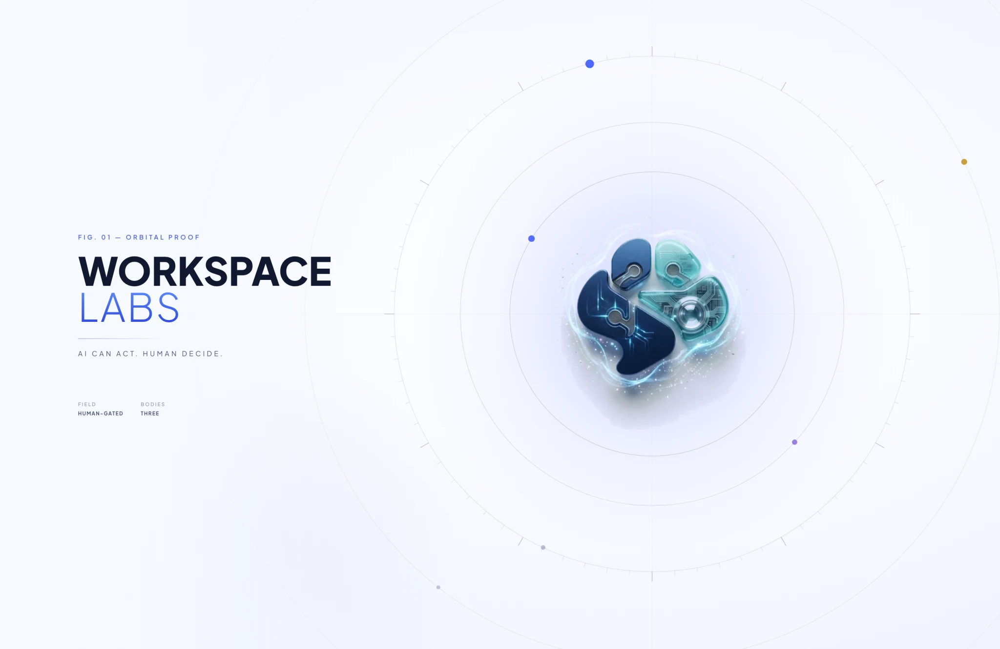

WorkSpace Labs — AI can act. Human decide.

Fig. 01 — Orbital Proof
AI can act. Human decide.
A build system where the AI does the work and the person keeps the decisions. Eight months, three agents, twenty-eight rules — and a board where nothing lands without a human pressing something.
Read the journeyWhat it is
An AI that can do the work, and never the deciding.
Most AI tools ask you to trust the output. This one is built the other way round: the machine is fast and tireless, so it plans, builds and checks — and every point where something could be lost, changed, or shipped is a button only a person can press.
Speed from the machine. Judgement from the human.
The agents write plans, write code, write the test list and read each other's work. They cannot commit, cannot accept, and cannot reject. Those three are missing from their tools entirely — not discouraged, not policed. Missing.
The board
Six stages, and the three that need you.
Every piece of work is one card, and it walks the same road. The AI moves it between stages. You own the three crossings marked below.
- Idea
- Plan
- Exam
- Commit you
- Build
- Review
- Accept you
- Reject you

The crew
Three agents. One job each. No swapping.
They run side by side in one session. Each has a job it may do and jobs it may not — and no agent can hand itself a different one.
Asks, then draws
Interrogates the idea before anyone builds — who it is for, when you need it, what the unclear words mean — then designs the shapes you choose between.
Builds what you accepted
Turns the accepted design into real code. Never draws the design it is going to build, and never writes the test list it will be marked against.
Sets the exam, reads the code
Writes what must be tried to prove the build works — before the build starts — then reads the finished code and writes the problems in plain words.

What the rules stopped
Twenty-eight rules. Four of them earned the hard way.
Each one exists because something went wrong once, and writing it down was cheaper than it happening twice.
The gates are missing buttons
Commit, Accept and Reject aren't promises an agent might forget under pressure. The commands simply don't exist on the agent's side.
Nobody marks their own homework
The test list is written by a different agent, before the build starts. The builder has to hand it back ticked, item by item.
The loop cannot run forever
A reviewer who keeps finding real problems and a builder who keeps fixing them can grind for days. On the third round the board stops and asks you one question instead.
The builder cannot check its own work
Reviewing is a separate lane. The agent that wrote the code is refused the command that would let it sign the code off.
The windows
The rest of the app, as it actually is.
The board and the crew are above. Here is everything else — real captures from the running app, not drawings of it.


The short version
The machine moved fast. Every decision stayed yours.
That is the whole system. Everything above is the bookkeeping that makes it true on a Tuesday, at round eleven, when nobody is watching.